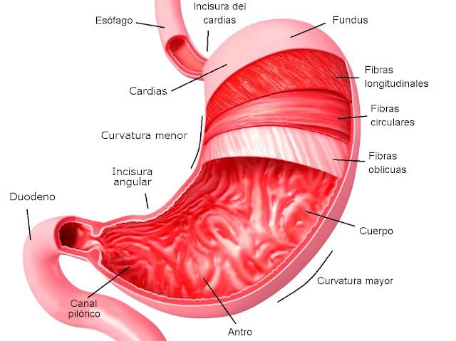

Capítulo 1
Glándulas Salivales

 T.S.U. Histotecnología
T.S.U. Histotecnología
Guía de histología
El aparato digestivo es un sistema tubular que, desde el punto de vista funcional y anatómico, se extiende desde la cavidad bucal hasta el conducto anal, en las etapas tempranas del desarrollo embrionario este tracto se origina a partir de un tubo ciego limitado por las membranas bucofaríngea y cloacal, la ruptura de estas estructuras da paso al canal continuo definitivo. Su función esencial es transformar los alimentos mediante procesos físicos y químicos, permitiendo que los componentes útiles sean absorbidos y utilizados por el cuerpo, mientras que los residuos se eliminan como materia fecal. El sistema digestivo inicia en la cavidad bucal, Conformada por el vestíbulo y la cavidad oral propiamente dicha, glándulas salivales, el borde bermellón (labios), los dientes, la lengua como estructura anexa. Su revestimiento está formado por tres tipos de mucosa: la mucosa masticatoria, de revestimiento, y especializada.
Explora por tema
Posteriormente, el sistema continúa con el tubo digestivo, que incluye el esófago, estómago, intestino delgado e intestino grueso. A lo largo de toda su extensión, este tubo mantiene una organización histológica compuesta por cuatro capas:
células absortivas, secretoras, inmunitarias y enteroendocrinas, como parte del sistema funcional de la mucosa. El aparato digestivo incluye glándulas anexas como el hígado, el páncreas y la vesícula biliar, que aportan secreciones indispensables para la digestión y la absorción, completando así la estructura funcional del sistema, se organiza desde la lengua y la cavidad bucal, continúa por el tubo digestivo y se complementa con las glándulas anexas, formando un sistema integral destinado a la digestión, absorción y protección del organismo.
Glándulas Salivales

Glándula Parótida

Glándula Submandibular

Glándula Sublingual

Punta de lengua

Base de lengua

Esófago

Unión esofagogástrica

Estómago
Glándulas cardiales y capas del estómago

Glándula Fúndica

Glándula Pilórica

Intestino Delgado
Intestino Delgado: Duodeno

Intestino Delgado: Yeyuno

Intestino Delgado: Íleon

Intestino Grueso

Intestino grueso: colon

Hígado

Vesícula Biliar

Páncreas